Chapter4
Chapter4: Instruction-Level Parallelism(ILP) 指令集并行
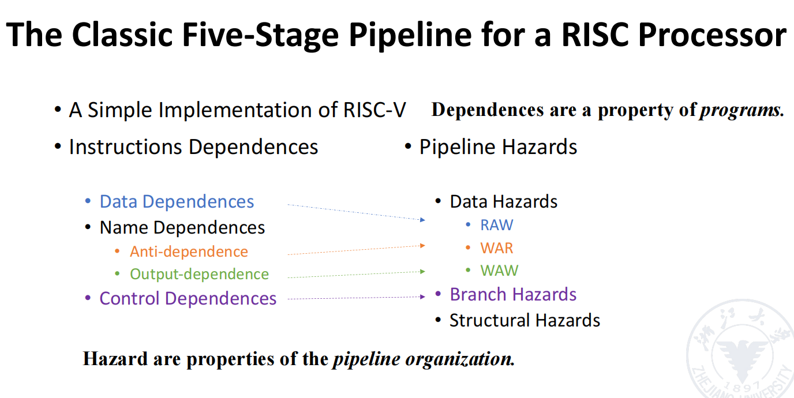
比如对于比较简单的例子：
FADD.D R1，R2，R4
FADD.D R2，R1，1
FSUB.D R1，R4，R5
可以看到第一条、第二条有一个RAW与WAR，第一条和第三条有一个WAW，第二条和第三条有一个WAR。
我们为了解决这类冲突，可以使用改名或者调度的方法。
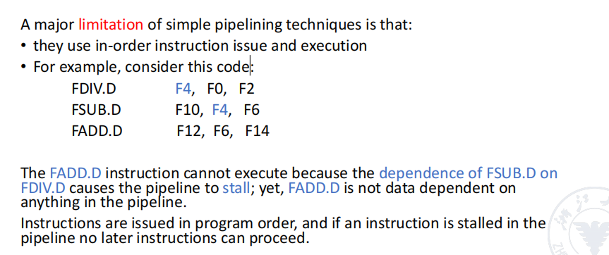
4.1 Dynamic Scheduling
乱序执行允许了WAW与WAR冒险，这类冒险不存在与五阶段流水线中。
- Scoreboard algorithm 计分板算法 is an approach to schedule the instructions.
- Robert Tomasulo introduces register renaming in hardware to minimize WAW and WAR hazards, named Tomasulo’s Approach.
Scoreboard Algorithm
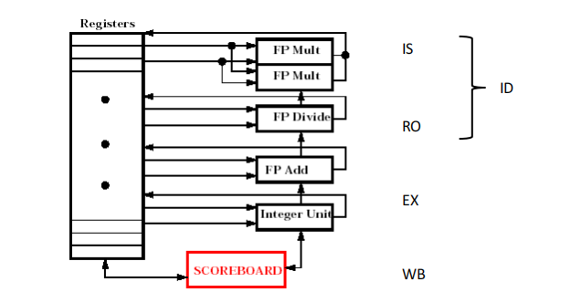
问题1：为什么是两个乘法器？
乘法较除法出现的概率更大，同时乘法的运算时间长于加减法，因此需要更多的乘法器。
为了配合程序执行的过程中实现控制，我们在ID段分为两段，分别为IS/RO段，IS用于检查有无结构冲突(部件是否被占用)，RO用于检查有无数据冲突(数据是否准备好)。
RO段实际实现了乱序，因为数据未就绪的时候大家都停在一个位置，谁先准备好谁先执行。
scoreboard部件记录了以下内容：
-
指令的状态
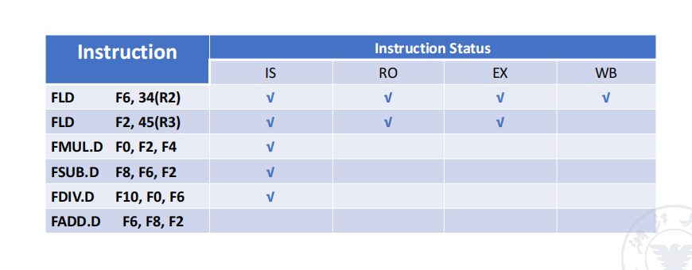
-
功能状态表
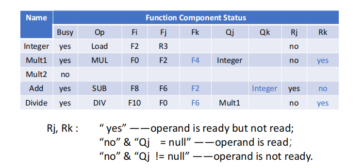
首先就是
op列，表示指令的类型，如add/sub之类。Fi代表目标寄存器，Fj&Fk代表源寄存器，Qj&Qk代表源寄存器的部件来源，Rj&Rk代表是否ready。我们看上面的例子，实际有三个状态的。
yes代表指令数ready了，但是不read，为什么呢，因为另一个还没ready。no & Qj == null代表read了，no & Qj != null代表未ready，未ready留存部件来源。 + 结果寄存器表
我们对一个例子解析：
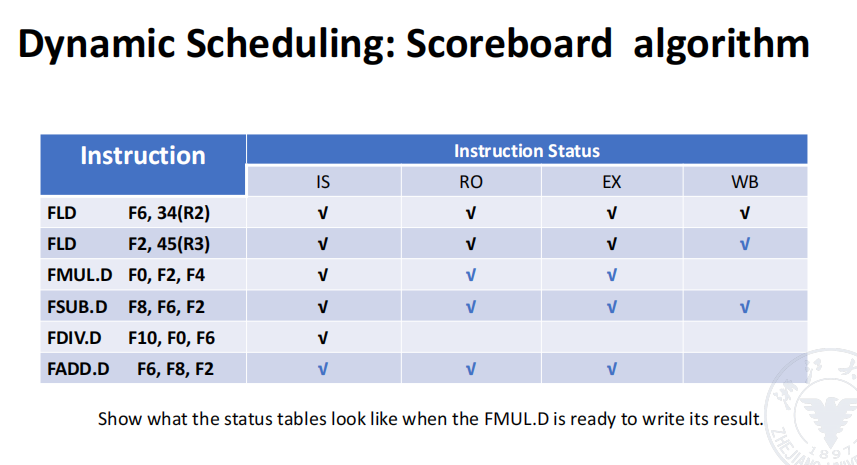
ok现在FLD F2的这一条指令写回了，这使得第三条、第四条指令可以操作了，由于三四无名相关，第四条指令可以随意操作。
然而，第三条指令使得第五条指令需要等待F0的结果，同时第六条指令与第五条指令存在名相关，这使得第六条指令不能写回，以防止第五条指令F6读到新的值。我们可以看到这个过程。
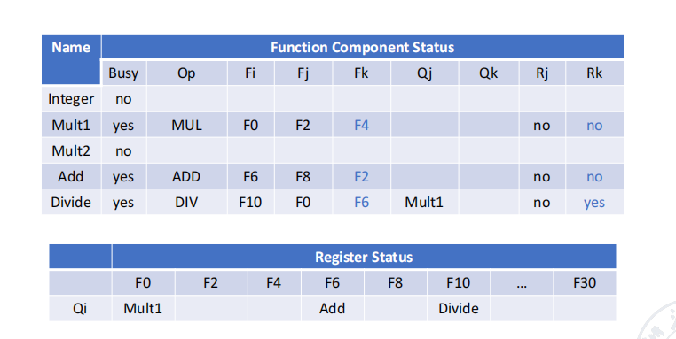
这是此时另两个表的状态。
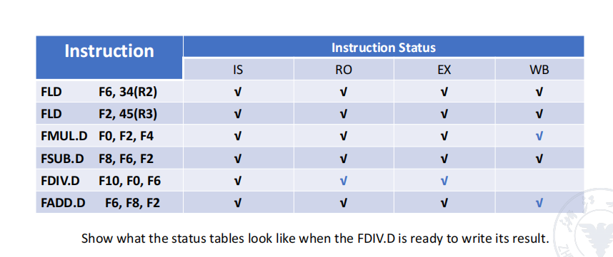
第三条指令运算完成后，得到F0的结果，第五条读完F6的时候第六条就可以写回了。我们可以看到这就是一个乱序的体现，第六条先于第五条完成了。
然后是一个挺难的practice：
FLD F6, 34（R2）
FLD F2, 45（R3）
FMUL.D F0, F2, F4
FSUB.D F8, F2, F6
FDIV.D F10, F0, F6
FADD.D F6, F8, F2
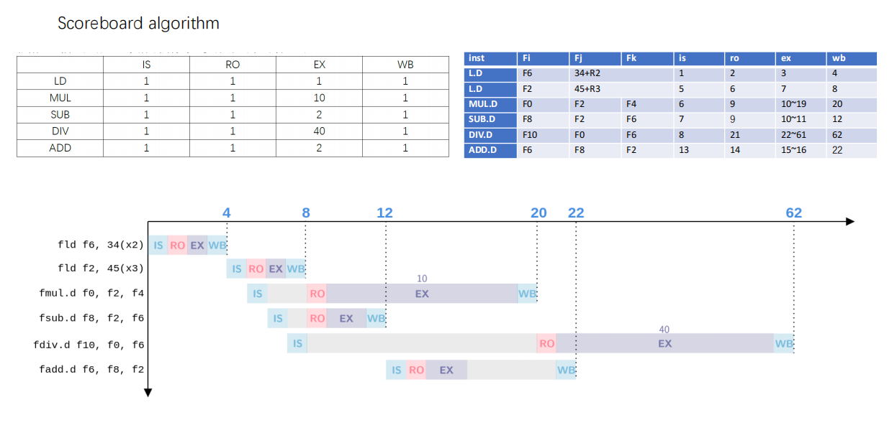
怎么说呢，看了答案后就很简单的一道题：
最开始的1-4没啥问题，然后第二段指令何时进来就踩坑了。由于两个load紧邻着，因此第二段指令的IS段需要在最后一个load的WB段结束之后才能进入，否则判断结构冲突。然后三、四、五三条指令的IS就往里进，第五段由于需要等待第三段的写回，因此RO需要等待。其余由于F2的名相关，在F2写回后才进。第六条的add等待sub结束后才进。
Tomasulo's Approach
保留栈的意义：存储、重命名。计算得到结果不扔到寄存器而是放在里面就叫这个名字了。
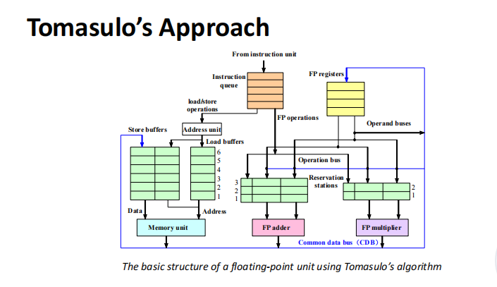
OK大致理解了这个过程。首先就是分为三个阶段，IS/EX/WB然后，我们拿两条指令举个例子:
MUL F0，F2，F4
ADD F2，F0，F6
首先是MUL，很轻易地往里进：
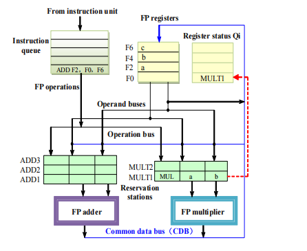
CDB线是可以将结果进行所有部件的联通的线。
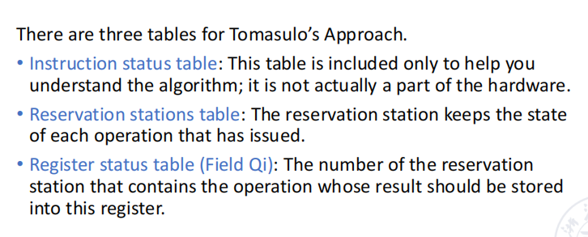
与scoreboard类似的三张表。
再举个例子，内容和最之前一样。
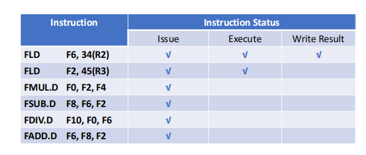
第一条指令直接就往里进，没什么问题，第二条指令也是。第3-6条也都能通过IS段进入。
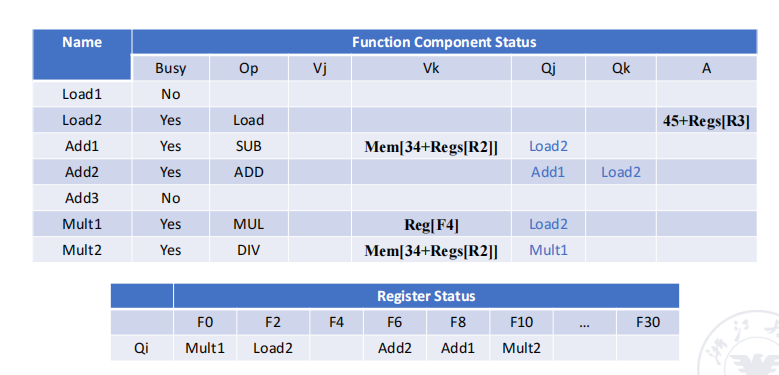
这是另外两张表的结果。
进一步，我们看到：
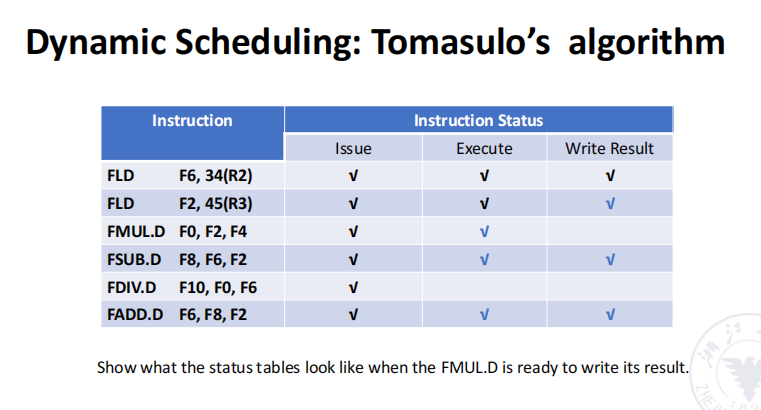
可以注意到结果与scoreboard算法存在一点差别。在scoreboard算法中，由于第五条指令与第六条存在名相关，第六条并不能立刻写回，需要等到第五条读完后才能写。而在Tomasulo算法中，第六条指令可以直接写回。
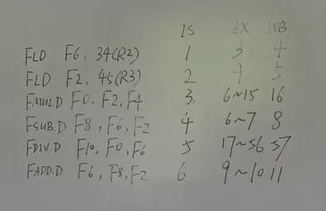
注意这里load是两拍的，忘了为什么了。复习补充：是因为load计算加的地址也需要一个cycle，总之是2拍。
精确异常
希望顺序输入，乱序执行，顺序提交，显然我们在结果上需要设立一个等待，名为：基于硬件前瞻。
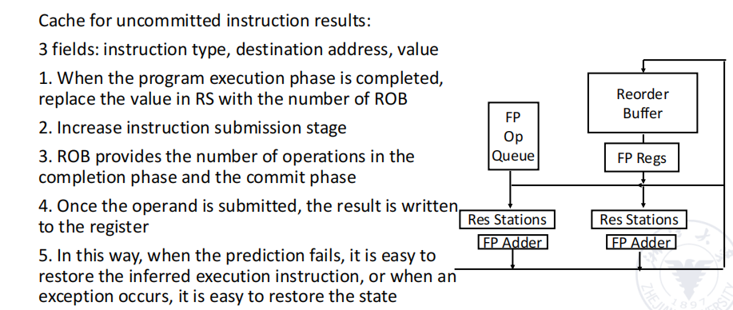
先算完但是序号偏后的指令不能先提交，需要等待，等待的地方就在Reorder Buffer中，为了实现之我们需要进行排序。
IS阶段的输入是顺序的，但是EX与WB阶段都是乱序执行的，在commit阶段我们顺序提交。